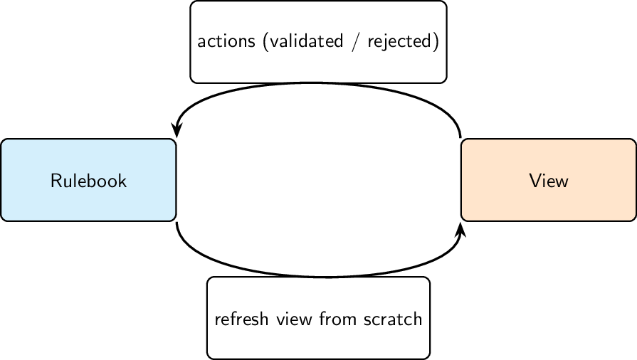
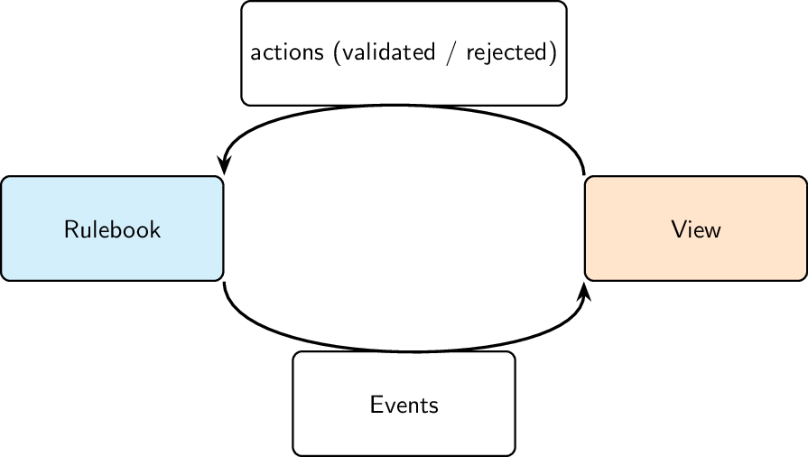
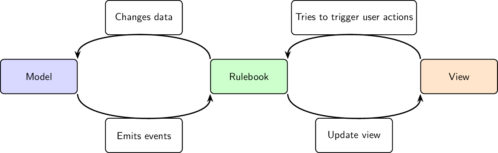
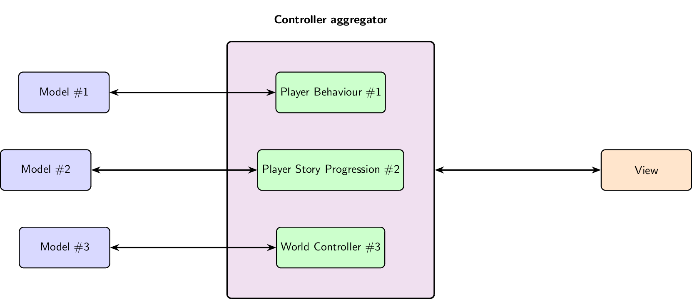
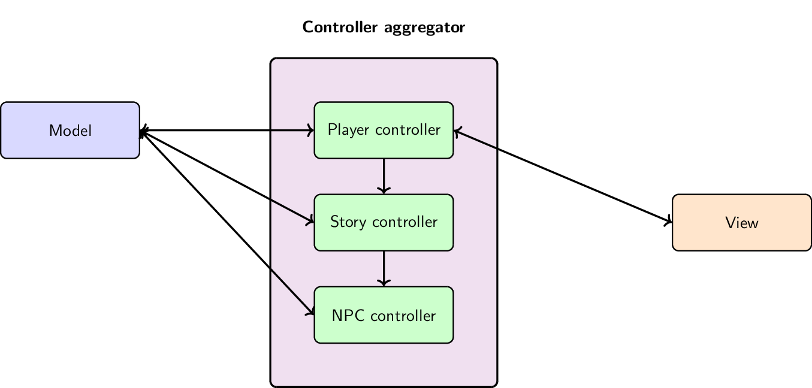

UI, Controller, and Gameplay
This page outlines the intended development workflow for a complex interactive program. It illustrates how Rulebook code fits into a Model–View–Controller (MVC) architecture.
Note: Rulebook is not tied to MVC specifically. We use MVC here simply because it’s a familiar pattern to many developers—but Rulebook can integrate into virtually any software architecture.
MVC
MVC: Model, View, Controller
Different people assign different meanings to the components of MVC. In this document, we’ll provide clear definitions of Model, View, and Controller as we will use them throughout.
Model
The Model is the collection of data required to achieve the business objectives of the software. It may reside locally or remotely. It can be persistent (stored on disk) or ephemeral (limited to the lifetime of the program). It may or may not be serializable.
Examples of models:
The contents of a Word document in Microsoft Word.
The in-memory state of a video game, including both data saved to a file and temporary game logic (e.g. animation state, cooldowns, etc.).
View
The View is the part of the program that presents relevant information from the model to the user (or another system), enabling them to make decisions. The view handles user interactions—such as button clicks—by sending commands to the controller.
The view is updated by the controller when necessary. In games, this could happen every frame; in CRUD applications, only when data changes. Views are usually temporary (not saved to disk) and can be local or remote.
Examples of views:
The entire graphical stack in a video game, which renders part or all of the game state as images, frame by frame.
A web UI for a checkout process in an online store, where the user provides input, clicks confirm, and proceeds step-by-step until the purchase is complete.
Controller
The Controller contains the program’s business logic. It knows how to read from and modify the model to achieve the program’s goals.
Controllers are typically short-lived and not persisted to disk, though some user preferences (like language or theme) may be saved. The controller may observe the model to trigger logic when certain values change.
It is responsible for:
Validating and processing user actions from the view.
Updating the view in response to changes in the model.
Examples of controllers:
A forecasting module in a weather application that calculates predictions, stores the result in the model, and updates the view.
The logic engine that enforces the rules of chess, regardless of how the board is visually represented.
The View–Rulebook Pattern
A simple yet powerful way to integrate Rulebook into an MVC-like architecture is by allowing Rulebook to take over both the Model and Controller roles.
In this pattern:
Variables inside Rulebook action functions serve as the Model.
The action function itself acts as the Controller.
The View sends user actions to the Rulebook action function. Since the function encodes the full set of valid transitions, it can automatically reject invalid actions.
After each action—or batch of actions—the view re-renders itself based on the current state of the action function. This model ensures clear separation of concerns while simplifying validation, state management, and UI updates.

Although the VIEW–Rulebook pattern is slower—since the view is fully recomputed after each user input—it provides out-of-the-box support for many powerful capabilities:
✅ Automatic textual and binary serialization of the model.
✅ Automatic tracing and serialization (textual and binary) of the controller’s execution.
✅ Automatic testing using fuzzers, machine learning, or formal proofs.
✅ Automatic language bindings, allowing the view to run independently from Rulebook.
✅ Cross-language support to write views in multiple languages (e.g., C#, Python, Godot).
Efficient VIEW–Rulebook Pattern
This is the approach used in our 4Hammer example.
As mentioned earlier, the standard VIEW–Rulebook pattern can become inefficient for complex applications because the entire view is refreshed after every single action.
To address this, Rulebook supports two optimization strategies. The first and most compatible method preserves all the benefits of the pattern by introducing event emission.
Event-Based Optimization
Action functions can emit events, which the view can subscribe to and process selectively.
Example: Optimizing Chess Rendering
Suppose you’re building a more performance-sensitive chess application. Instead of redrawing the whole board after every move, the Rulebook action function can maintain a queue of events like:
"piece_moved""piece_removed"
After each action:
The view reads the event queue.
Each UI component decides whether to update based on those events.
For example:
A graphical element displaying a rook only listens to
"piece_moved"events.If the event references its own rook, it updates itself—otherwise, it does nothing.
This event-driven rendering dramatically reduces unnecessary UI updates while still benefiting from Rulebook’s safety, serialization, and testability.

The second, more performant implementation allows Rulebook code to directly call functions that update the view, without any kind of indirection. This pattern breaks many of the automatic tools provided by Rulebook—but most of them can be partially or fully recovered.
Automatic tracing, and textual and binary serialization of the controller’s execution ✅ Unchanged
Automatic bindings to write the view in multiple languages
Automatic bindings to execute the view independently from Rulebook ❌ Not meaningful — This design intentionally blurs the line between view and controller. If you need multiple interchangeable views (e.g., a web UI and a native UI), you can use the same techniques described for machine learning to isolate them.
Automatic testing with fuzzers, machine learning, and proofs ⚠️ Preserved with conditional compilation — The compiler can be configured to exclude view-specific code when building Rulebook components for fuzzing, learning, or formal verification. If you want to use machine learning in a release build that includes the view, you can instruct the system to ignore view-related memory (like pointers to UI components) during training or tracing.
Automatic textual and binary serialization of the model ⚠️ Requires annotation of view data structures — Any view-related fields inside the model must be marked to be excluded from serialization. After loading the model from disk, the view is responsible for reinitializing those fields as needed.
View–Rulebook–Model Pattern
Everything previously discussed about views remains valid here. This section focuses on a separate concern: how to mix Rulebook with custom models.
Using a custom model becomes necessary when you want to:
Partially or fully reuse existing code to implement the model.
Run the model in another process, such as on a backend server or a remote database.
Write the model in another language, e.g. for performance (CUDA) or integration (SQL).
In these cases, you can connect Rulebook to the external model using the same language-interoperability techniques described here.

Just like when violating the separation between view and controller, writing parts of the model outside of Rulebook makes it harder to use Rulebook’s off-the-shelf tools. The tools don’t stop working entirely—but they may require additional effort or custom implementation.
Automatic textual and binary serialization of the model
Serialization relies on Rulebook being able to print, parse, binary print, and binary parse the model. If you’re using model classes written in another language, you’ll need to implement those methods yourself, in the original language, for every class used in Rulebook. If you do, serialization will work as expected.
Automatic tracing, and textual and binary serialization of the controller
This works as long as you don’t use foreign classes (from another language) as arguments in action statements. If you do, then the same rules from the model serialization section above apply: you’ll need to manually provide serialization logic.
Automatic testing with fuzzers, machine learning, and proofs
Fuzzing behaves like tracing—if the controller or model depends on external types, you’ll need serialization support.
In addition:
✅ Model checking requires that foreign model classes be copiable.
✅ Machine learning requires those classes to implement serialization-to-tensor traits.
Automatic bindings to execute the view independently from Rulebook
✅ Unaffected
Automatic bindings to write the view in multiple languages
✅ Unaffected
View–Multi Rulebook Controller Pattern
While it’s sometimes tempting to design an application as one giant interactive sequence from start to finish, that’s rarely ideal. Most interactive programs are made up of many small, independent interactive sequences.
For example:
A video game might include one sequence for how powerups are unlocked, and another for how a non-player character reacts to the player.
You could technically combine all these into one massive coroutine—but it’s usually better to treat them as separate Rulebook controllers operating on different parts of the model.
In this scenario, everything previously discussed in this document still applies. The only difference is that multiple Rulebook controllers are embedded inside a controller aggregator, which may be written in another language—or even in Rulebook itself.

The controller described above outlines an interactive game where:
One Rulebook controller governs how the player can act in the world.
Another controller manages a complex, non-linear story progression.
A third, independent world controller handles the behavior of non-player characters (NPCs).
Of course, the astute reader will recognize a flaw in this setup: the player’s story appears completely disconnected from the world controller. This isn’t very realistic—story events should affect the world and its characters. This leads us to the final architectural pattern:
Multilayer Rulebook Controllers
In some cases, you have multiple interactive sequences that operate on the same shared model. These sequences may also be allowed to create, modify, or terminate one another.
For example, imagine a video game with:
A main story sequence that drives narrative progression.
Separate sequences for each NPC on screen, handling their individual behaviors.
Now say a certain story event causes all NPCs to vanish—you would need to discard their interactive sequences and remove them from the game. To do this cleanly, Rulebook lets you organize interactive sequences hierarchically.
Example Design
Here’s how such a setup might look conceptually:
A single model, possibly written in Rulebook or another language, is shared between all controllers.
The NPC controller is the lowest layer—it controls character behavior when the player is nearby.
Above it, the story controller has authority to create, modify, or destroy NPCs by managing their associated controllers.
At the top, the player controller listens to user inputs and, based on player actions, triggers story events, which in turn cascade downward.
This kind of layered architecture lets each controller focus on its domain, while still interacting in a coordinated way.

While this pattern is more complex to implement, it allows you to build interactive sequences that can dynamically create, modify, or terminate other sequences. Despite the added complexity, it retains all the benefits described in the View–Rulebook pattern, including:
Automatic validation of user actions
Reusability and testability of controllers
Clear separation of concerns
It also remains fully compatible with all previous considerations about separating the controller from the model.